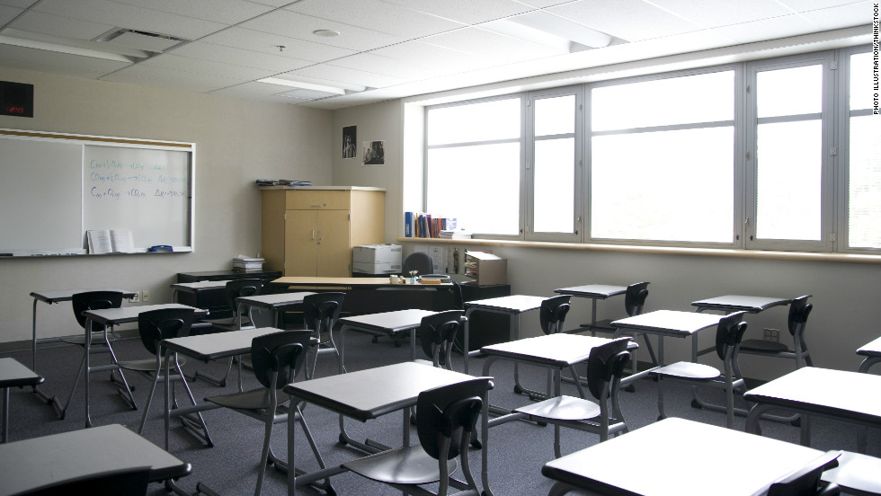

Welcome to our class website !
We learn in a very modern school
The layout, design and decor of the classroom has a significant effect upon the quality of the educational experience. Attention to the acoustics and colour scheme may reduce distractions and aid concentration. The lighting and furniture likewise influence factors such as student attention span. [1]
The acoustics of the classroom are very often overlooked, but are an important part of the success of a child. Choosing only materials that cause sound to reverberate, such as tile floors and hard wall surfaces, greatly increases noise levels and can prove detrimental to learning. One study of hyperactive versus control groups of children found that white noise has no impact on either group, but that auditory stimulation such as distant conversations or music has a negative effect on both groups of students. [2]
Online learning technologies make it possible for learning to take place at any time, at any place, and at any pace that the learner desires. This is particularly important for adult students who may need to schedule their learning around work and parenting responsibilities. [3]
To learn more about classrooms visit Wikipedia.

